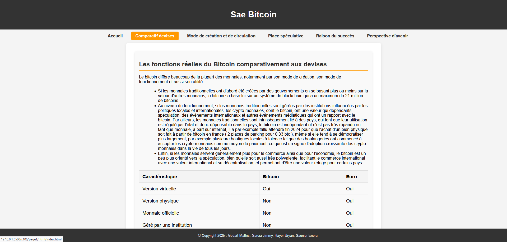
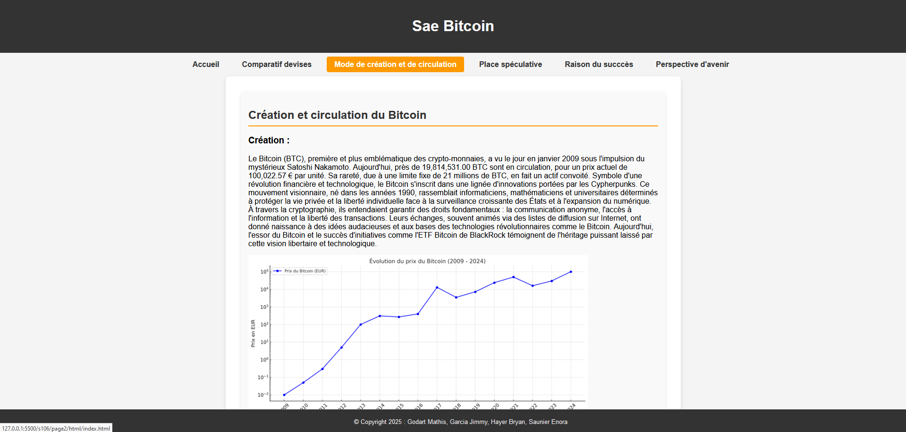
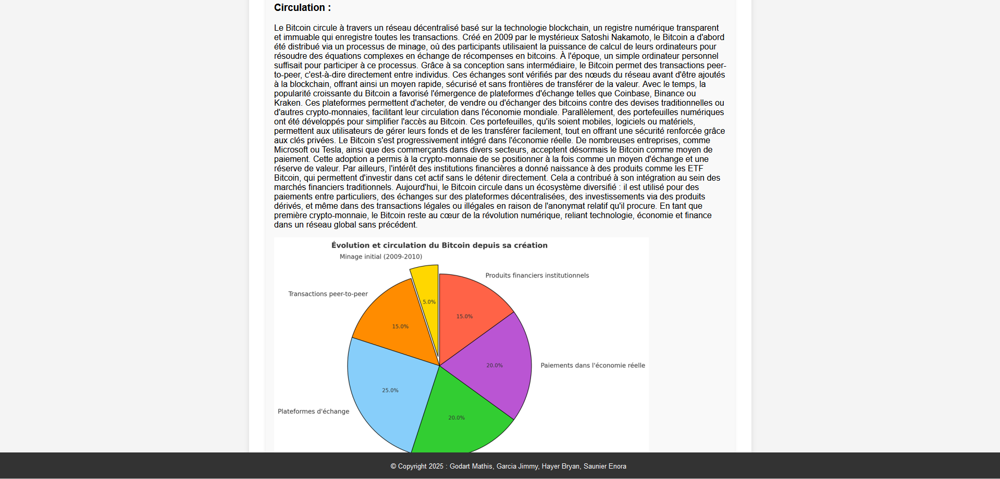

Comprendre le Bitcoin
Site pédagogique de vulgarisation sur la Blockchain
Le Contexte
Les crypto-monnaies et la blockchain sont des sujets souvent jugés opaques ou trop techniques pour le grand public. L'objectif de ce projet était de créer un site web informatif capable d'expliquer simplement le fonctionnement du Bitcoin, du minage et de la décentralisation à des débutants complets.
Mes Missions & Réalisations
Ce projet m'a permis de travailler sur le fond (le message) et la forme (le code) :
- Vulgarisation Technique : Travail de synthèse pour traduire des concepts complexes (Proof of Work, Hachage, Ledger) en langage courant et illustré.
- Structure Sémantique : Utilisation des balises HTML5 (article, section, aside) pour structurer le contenu de manière logique et accessible.
- Mise en page CSS : Création d'un design épuré et moderne en utilisant Flexbox pour faciliter la lecture, sans utiliser de frameworks (comme Bootstrap) pour maîtriser les bases.
Ce que j'ai appris
Au-delà de la technique HTML/CSS, j'ai appris l'art de la pédagogie. Savoir expliquer une technologie complexe est une compétence essentielle en informatique, notamment pour dialoguer avec des clients ou des collègues non-techniciens.
Galerie



